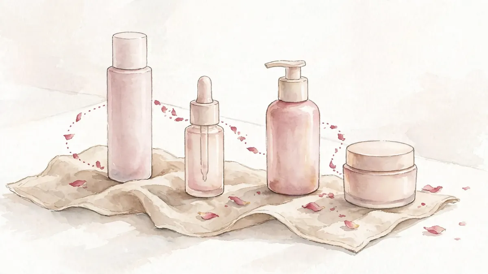

美容液を塗る順番の考え方

化粧水、美容液、乳液、クリーム。アイテムが増えるほど、「どの順番で塗るのか」が分からなくなりがちです。施術の現場でも、塗布の順番は仕上がりの感触を左右する大切な要素です。この記事では、順番を決める基本の考え方を整理します。
基本は「軽いものから、重いものへ」
順番の基本は、テクスチャーの軽いものから重いものへ、です。水分が多くさらっとしたもの（化粧水）を先に、次に美容液、乳液、最後に油分の多いクリーム、という流れが一般的な組み立てです。軽いものを後にすると、先に塗った重いものの上からでは広がりにくく、むらになりやすくなります。
手のひらに出したときの質感が、そのまま順番の目安になります。迷ったら、手の甲に少しずつ出して、軽いと感じる順に並べてみてください。
例外は、商品ごとの案内が優先
ただし、美容液の中には「化粧水の前に使う」設計のもの（導入タイプなど）もあります。この場合は、基本の考え方よりも、商品の使い方の案内が優先です。パッケージや公式の案内に「洗顔後すぐ」「化粧水の前」といった指定があれば、それに従います。
新しいアイテムを買い足すときは、そのアイテムが「手順のどこに入るのか」を、買う前に確認しておくと迷いません。販売ページの使い方の欄に、順番の案内が書かれていることが多いです。
部位ごとに順番を変える、という工夫
顔全体を同じ順番で塗る必要もありません。乾燥しやすい頬には美容液を先に多めに、べたつきやすい額には軽めに、といった具合に、部位で順番と量を変える方法もあります。施術では、部位ごとに使うアイテムと順番を変えるのは日常的なことです。
順番に迷ったときの合言葉は、「軽いものから」「迷ったら商品の案内」。この2つを覚えておけば、新しいアイテムが増えても手順を組み立て直せます。
美容液を2種類使う場合は、その2つの間でも同じ考え方です。さらっとした方を先に、とろみのある方を後に。ただし、油分を含むタイプ同士など、質感の差が小さい場合は、商品ごとの案内の有無を先に確認します。順番に迷う時間を減らすために、私は洗面所の棚に「使う順」に並べて置いています。並びそのものを手順書代わりにする方法は、忙しい朝にも有効です。棚の並びを写真に撮っておくと、模様替えのときにも元に戻せます。
順番を決めたら、しばらくは同じ順番で続けてみてください。手順が体に馴染むと、朝の身支度の中で迷う時間が減り、量の調整にも意識が回るようになります。
順番に迷ったときは、まず1品ずつ試して、肌の感触で確かめるのが確実です。
セラフィナ「順番の基本は、テクスチャーの軽い順。迷ったら商品の案内を優先だね」